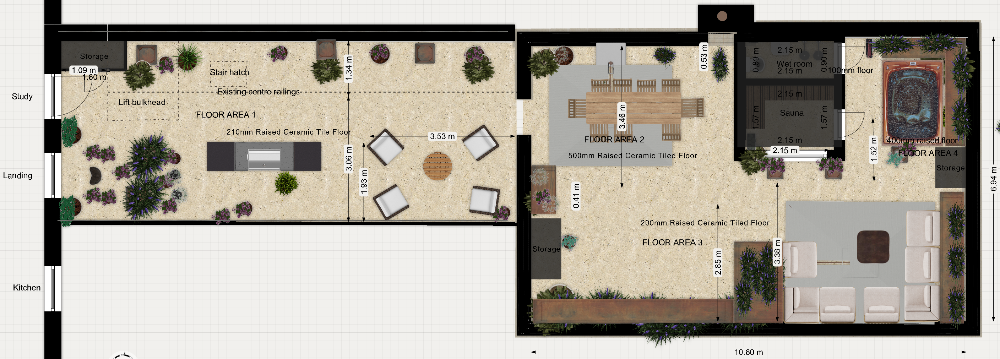
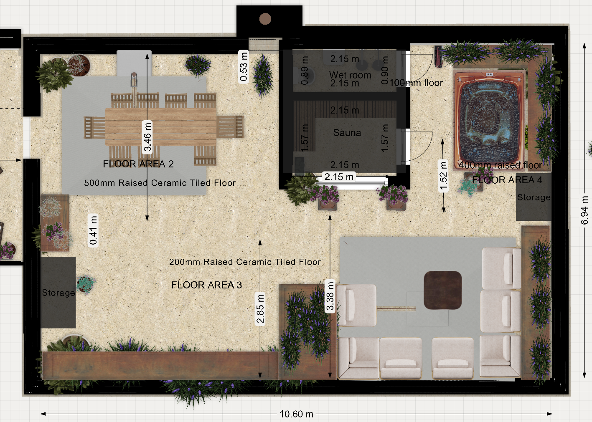

Roof Terrace — Specification
⚠️ IMPORTANT — please read first
This is Chris's informal working document for communicating his current best understanding of the project details with Ronan Bond. It is not a finished specification. It will contain inaccuracies, gaps, and assumptions that need to be checked. Ronan's formal documents will be the authoritative source — this document exists to feed into them.
Brief for Surveyor
This is our draft of what we'd like to build on the roof terrace at 22 Sussex Square. It covers the sauna and wet room building, the hot tub, and the surrounding terrace works (railings, parapets, parasols, fall protection, tiling, and planters). We've worked through it ourselves and there will be things we've got wrong, missed, or need your steer on. Where we're confident is the look and feel and the equipment we want; where we'd really value your input is on regs, structure, and any practical issues we haven't spotted.
The building shell (external walls, roof, weatherproofing) of the sauna/wet room structure is in your scope. This document covers the fit-out of those two rooms, the external openings (doors, windows), and all the terrace-wide works listed below.
Orientation: north is to the right of the floor plan drawing.
Drawings
Overall plan (full terrace, including narrow section / FLOOR AREA 1 with lift bulkhead and stair hatch):

Main section (FLOOR AREAS 2, 3, 4 — dining, lounge, sauna / wet room building, hot tub):

Contents
PART A — SAUNA
Internal dimensions: 1.57m (east–west) × 2.15m (north–south)
Minimum internal ceiling height: 2.15m (same as wet room — single internal ceiling height across the whole building)
Floor
- Tanked (continuous with adjacent wet room), screeded to fall, R11 porcelain tile to match the rest of the terrace
- Removable softwood duckboards laid on top of the tile (flat-pack kit, e.g. Finnmark, ~£80–150)
- Stainless steel high-temperature drain connected to the terrace drainage
Walls and Ceiling
This is a working assumption — final makeup to follow your steer (see "What we'd value your steer on" below).
- Insulation: 75–100mm PIR (e.g. Celotex/Kingspan) in stud cavity, preferred over mineral wool for better thermal performance per mm of wall thickness — we're targeting the minimum viable external wall thickness (see footprint discussion below)
- Foil vapour barrier on the interior face of the insulation, fully taped, continuous around all junctions (especially the partition–external-wall corner)
- 25mm ventilated batten cavity between the foil VB and the internal lining, to let the timber breathe between sessions
- Internal lining: untreated kiln-dried softwood tongue-and-groove — cedar, aspen, thermo-aspen, or spruce; final choice to follow the kit supplier's recommendation if kit-route is taken (see below)
- All fixings stainless steel
- Internal partition (sauna ↔ wet room) to be substantially slimmer than the external walls — see footprint discussion below
Benches
L-shape wraparound, two-tier on both walls, all in the same untreated whitewood/spruce:
| Position |
Height (FFL) |
Depth |
Length |
| Upper bench, west wall | 950mm | 550mm | 2.15m |
| Lower bench/step, west wall | 450mm | 350mm | 2.15m |
| Upper bench, south wall | 950mm | 550mm | 1.57m (less heater clearance) |
| Lower bench/step, south wall | 450mm | 350mm | 1.57m (less heater clearance) |
The upper bench wraps around the corner so two people can lie at right angles. The south-east end of the south wall benches (nearest the heater in the SE corner) needs to be cut back by approximately 250–300mm to maintain clearance from the Harvia Cilindro PC90E heater body (360mm wide × 340mm deep) and its guard rail. Final dimensions to be confirmed against the manufacturer's installation manual. A heat shield panel above the heater is recommended given the radiant output of the 9 kW column heater.
Door
- North wall, 600mm clear opening
- Pre-made outdoor sauna door, solid cedar, weatherproof frame and threshold — suppliers worth considering include Finnmark Sauna (UK), Auroom (Estonia/UK), Tylö Helo (Sweden), Harvia (Finland). Final choice likely tied to the kit-vs-site-built decision (see "What we'd value your steer on"), since door + interior typically come from one supplier.
- Solid timber, no glazing
- Magnetic catch, 50N+ pull force (we want it wind-resistant); wooden handles
- Outward-opening, with restrictor chain to limit swing in wind
- Sourced from sauna supplier
- Approximate cost: £250–450
Window
- East wall, positioned toward the north end of the wall (view to the NE)
- 1200mm wide × 800mm tall, single pane, top-hung (awning) opening — outward, hinged at top
- Sill at 1100mm from FFL
- Frame: cedar or other heat-tolerant softwood on the interior face; external face can be aluminium-clad if needed for weatherproofing — NOT aluminium internally (would burn skin at sauna interior temperature)
- Triple-glazed (4-12-4-12-4), argon-filled, low-E coatings rated for sauna interior temperatures, warm edge spacers — chosen for thermal retention given rooftop exposure
- Compression seals: EPDM or silicone (heat/humidity tolerant)
- Restrictor stay to limit opening in wind
- External manual roller blackout blind on exterior above (sized to cover full 1200mm width)
- To be specified in coordination with the kit supplier if kit-route is taken — sauna-rated window assemblies are typically supplied or specified by the sauna specialist, not a domestic window supplier
Heater
- Harvia Cilindro PC90E — 9.0 kW, 240V single-phase electric sauna heater, ~90 kg stone capacity, cylindrical floor-standing column positioned in the south-east corner
- Large stone mass for sustained, authentic löyly. Stones loaded loosely around a central heating column.
- Physical: ~1150mm tall × 360mm wide × 340mm deep, plus guard rail clearance of ~100–150mm around it
- Approximate UK price £1,100–1,400 (heater only; stones usually included)
- 25–35 min heat-up time to 90°C; managed via Home Assistant scheduling (Part C — Shelly Plus 1PM + 40A contactor)
- Heat shield panel above the heater is recommended given the radiant output of the 9 kW column heater
- 10mm² silicon-rated cable to a fused spur in the corner (cable rated comfortably above the 37.5 A continuous draw)
- Heater guard rail (usually supplied with unit)
- Note: previous spec assumed a Harvia Vega 4 kW — undersized for this volume and small stone mass = poor löyly. Superseded.
- Sourcing note: The PC90E is the 240V single-phase factory variant of the Cilindro PC90 line. Most UK retailers stock the standard PC90 (400V 3-phase); UK sauna suppliers should be able to source the PC90E directly, or alternatively wire a standard PC90 for 230V single-phase per the Harvia installation manual.
Electrical assumption (to be verified)
This section assumes:
- Single-phase 240V supply to the flat (the standard for UK residential — but to be confirmed by electrical survey of 22 Sussex Square)
- 40A circuit can be accommodated in the consumer unit (37.5 A continuous heater draw sits comfortably within a 40 A breaker rating)
- Three-phase supply, if available, would open up the higher-output Cilindro PC110 (10.8 kW, 3-phase only) — but we are not relying on this
To check with electrician at first opportunity:
- Confirm single-phase 240V supply (vs three-phase) at 22 Sussex Square
- Confirm a dedicated 40A circuit can be added to the consumer unit, or whether the consumer unit needs upgrading first
- Confirm the sauna supplier can source the PC90E specifically, or wire a standard PC90 for 230V single-phase per Harvia's installation manual
Ventilation
Passive only:
- 100mm inlet vent low on south or east wall, ~100mm from floor (near heater)
- 100mm outlet vent high on west or south wall, ~300mm from ceiling
Lighting
- 2× sauna-rated LED ceiling fittings (e.g. Cariitti, Tylö, Harvia) — purpose-made for sauna heat, ~£80–150 each
- Light switch outdoors on the terrace, beside the sauna door — IP55+ weatherproof
Sockets (For Future Office / Bedroom Conversion)
We want this room to be convertible to an office or bedroom in future without retrofitting power, so:
- 2× IP54 double sockets at 300mm from FFL
- Socket 1: east wall, under the window at the north end (for a desk facing the view)
- Socket 2: north wall (general / bedside use)
- Dedicated 20A radial circuit
- Both sockets clear of the south-east heater corner
- Used only when the room is cold
External Switches / Isolators (Sauna Side)
Grouped on the terrace wall beside the sauna door, IP55+ weatherproof:
- Sauna light switch (Shelly Plus 1 behind)
- 40A DP rotary isolator for the sauna heater (manual override / safety isolation) — sized for up to ~9kW single-phase heater (see Heater section)
What we'd value your steer on
Kit-supplied sauna interior vs site-built
We haven't decided whether the sauna interior — internal cedar T&G lining, foil vapour barrier, vented batten cavity, benches, heater installation, glass door, controls, sauna lighting — should be site-built by your team, or supplied as a cut-to-size indoor sauna kit from a sauna specialist who would install the interior into the shell you've built.
Argument for kit:
- Sauna-specific details (vapour barrier continuity, vented gap behind cedar, heater clearances, drain penetrations) handled by people who do this for a living, warranty-backed
- Frees your scope to focus on the shell, which is standard outbuilding work
- Door comes from the same supplier, coordinated finish
Argument for site-built:
- Slightly lower total cost if it all goes well
- Total control over internal finish details (bench layout, timber choice, reclaimed materials, etc.)
Suppliers worth contacting against our internal dimensions:
- Finnmark Sauna — UK (Leeds); cut-to-size indoor kits, outdoor doors, components, heaters
- Auroom — Estonia with UK distribution; premium modern aesthetic, custom indoor kits
- Tylö Helo — Sweden; established broad-range supplier, kits and components
- Harvia — Finland; large industry presence, full kits and heaters
We'd value your view on which route makes sense, and which supplier(s) you've worked with before or would recommend approaching. If kit-route is taken, the chosen supplier feeds back wall makeup, vapour barrier, electrical, drainage and ventilation requirements for the shell.
Targeting minimum external building footprint
We'd like the external length and width of the sauna/wet room building kept as small as possible, to leave maximum surrounding terrace space. We accept this trades against insulation performance and weatherproofing robustness, and we'd value your steer on where the sensible limit sits.
External walls — thinnest viable makeup that retains good sauna thermal performance (we're aiming for U-value ≤ ~0.27 W/m²K) and is appropriate for coastal/exposed roof terrace conditions:
- Can we use 75 mm or 100 mm PIR in the stud cavity rather than mineral wool, to get better thermal performance per mm of thickness?
- Is a rigid 25 mm ventilated rain-screen cavity essential, or can a back-ventilated cladding detail direct to sheathing save thickness on this coastal site?
- What is the thinnest external wall makeup you'd be comfortable specifying for this exposure?
Internal partition (sauna ↔ wet room) — we're much less worried about wet-room warmth than sauna heat loss. In fact some heat leak into the wet room is welcome (pre-warms it for post-sauna showering). So the partition can be substantially slimmer than the external walls — perhaps 50 mm stud with mineral wool, no external weatherproofing layers. Would you agree, and is there anything (structural bracing, fire separation, regs) that requires it to be heavier?
Vapour barrier continuity at the partition–external wall junction — however the partition is built, the foil VB on the sauna face needs to be continuous around the corner with the external-wall VB. Any gap there is where moisture finds its way into the insulation long-term. We'd value your detailing on that junction.
External cladding (whole building)
Working choice: PVDF-coated marine-grade aluminium standing seam (e.g. Kalzip, Riverclack, PREFA), in anthracite/charcoal — target RAL 7016 / 7022 / 7024. Applies to all four external walls of the combined sauna/wet room building.
Why aluminium standing seam over the alternatives we looked at:
- Zinc and copper (the other common standing-seam metals): seagull droppings are acidic (uric acid, pH ~3–4) and permanently etch the patina on both, leaving accumulating white or green halo marks. PVDF-coated aluminium is chemically inert to uric acid — droppings wash off in the rain with no ghost marking.
- Equitone Tectiva fibre cement panels: strong runner-up — similar coastal performance, ~£500–800 cheaper for our ~28 m² of cladding. Loses on continuous-skin aesthetic, build-up depth (~40mm vs ~30mm), and warranty length. Sensible fallback if metal is rejected.
- Timber (cedar / Accoya / charred Accoya): planning preferred a longer-life finish than wood. Even charred Accoya — the best engineered-wood option we found — needs re-oiling every 8–10 years and ages less predictably than coated aluminium.
Specification points that determine whether the system lasts 40 years or pits in 5:
- Marine-grade alloy — aluminium 3003-H44, 3105-H44 or 5005. Mill-finish or anodised-only aluminium pits in salt aerosol; the alloy series matters here.
- PVDF (Kynar 500 / Hylar 5000) factory coating at minimum 25μm dry-film thickness. PVDF is UV-stable, hydrophobic, and salt-spray-resistant — documented on UK coastal commercial projects with 30+ year service records.
- A4 / 316 stainless steel fasteners and clips only. A2/304 stainless pits in marine atmosphere within a couple of years; galvanised steel sets up galvanic corrosion against the aluminium and rots the panels from behind.
Systems considered, all of which publish coastal warranties at marine specification: Kalzip (UK default), Riverclack (Italian, well-proven coastal), PREFA (Austrian, broad colour range), VMZINC Pigmento Aluminium.
Build-up impact: ~30mm total (panel ~1mm + ventilated batten cavity ~25mm + clips). No change to our 75–100mm PIR + foil VB insulation plan — cladding is a rainscreen only.
What we'd value your steer on:
- Acceptance of standing-seam aesthetic in the Kemp Town Conservation Area. Anthracite/charcoal is our target tone — discreet, recessive against the cream Regency stucco context, and hides gull marks best. If planning push back on metal, our fallback is Equitone Tectiva in mid-grey (TE20/TE30).
- Preferred system manufacturer from the four shortlisted above.
- Roof-to-wall transition — wrap continuously in one material, or break with a different roof system?
- Detailing of parapet, window reveal and door reveal terminations.
Roof of the sauna/wet room building
Working preference (subject to your visibility analysis): south-high mono-pitch at 15–20°, in continuous PVDF anthracite aluminium standing seam wrapping over from the wall cladding so the building reads as a single skin.
Why this shape — the logic that produced it:
Two competing concerns drove the geometry. Setting them out so you can challenge the reasoning where appropriate.
1. Gulls. The sauna/wet room building is the highest object on the terrace. A flat or near-flat roof at the highest point would become prime gull real estate — directly above the people using the terrace, and rising above the parapet bird wire (Part F), which we'd otherwise be undermining. Once gulls habituate to a rooftop they return every year and defend it. The conventional pitch threshold above which gulls can't comfortably stand or nest is ~15°; 20°+ is bulletproof. At 15° or steeper, no visible bird deterrents (wire grids, spikes, gel discs) are needed on the roof surface.
2. Visibility from Bristol Gardens AND from within the terrace. The heritage officer's pre-app condition is to minimise visibility from Bristol Gardens (we've already conceded a 3m setback from the north parapet and a 900mm maximum height above parapet). The +500mm raised dining patio south of the building also looks toward the sauna at a slight upward angle — any visible bird-deterrent clutter on the roof would read straight from the dining seats.
Why south-high specifically:
Counter-intuitive geometry rule: a roof surface above the dining-viewer's eye level is hidden behind whichever fascia sits closest to them. A roof that slopes UP and TOWARDS the dining viewer is largely hidden behind its own south fascia. A roof that slopes UP and AWAY is on full display.
| Viewpoint |
What's visible with a south-high pitch |
| Raised dining patio (south) | The high south fascia screens the roof surface from view — no surface clutter visible from the dining seats |
| Bristol Gardens (north) | The low north edge — lower than a flat-top building of the same internal volume would be |
| Bristol Gardens (west) | The pitch side-on, falling away from the viewer |
| East (away from all public views) | The pitch side-on |
Pitch tradeoff to be aware of: across the building's ~2.45m N-S depth, 15° gives a 656mm rise and 20° gives 892mm rise. With a flat-top building already pushing the 900mm-above-parapet envelope, the south edge of a pitched roof will sit above 900mm at the highest point. The trade we'd be making: south edge higher (but hidden), north edge lower (and visible to Bristol Gardens). The argument to planning: the visible edges are all lower than a flat-top equivalent; the high south edge is screened by its own geometry from every relevant viewpoint.
Working build-up assumption:
| Layer (top to bottom) |
Spec |
| PVDF anthracite aluminium standing seam | Continuous with wall cladding |
| UV-stable breather membrane | Tyvek UV Façade or Solitex Fronta WA |
| Counter-battens / sub-frame | A4 / 316 stainless clips |
| 100–150mm PIR between rafters | Continuous with wall PIR; foil VB taped through the wall-roof junction |
| Structural OSB or marine ply deck | 18mm |
| Internal ceiling lining | Sauna: cedar T&G; wet room: moisture-resistant cedar T&G or equivalent |
Drainage: small gutter along the low (north) edge discharging onto the warm-roof tile field, which then drains to the existing roof outlets. No new outlets required.
Fallback if the pitched option isn't viable (e.g. visibility splay shows the south edge can't be argued, or the height envelope can't accommodate it after Ronan's real build-up depth is known):
A near-flat roof (3–5° drainage fall to north) in the same standing-seam material, with an integrated stainless post-and-wire bird grid across the surface (matching the Part F parapet system). Lower profile from all directions, but the wire grid would be visible from the raised dining patio, and gulls habituate harder to flat surfaces — so this is a "last resort" if the height envelope rules out the pitched option.
What we'd value your steer on:
- Visibility splays from realistic vantage points on Bristol Gardens — drawn lines showing what's actually visible above parapet with the building at its current size, so we can judge whether the south edge of a pitched roof can be argued or whether the height-envelope is strict
- Real warm-roof build-up depth — if a slimmer build-up (e.g. ~180mm vs the 250mm we've assumed) is possible, that's headroom we can spend on pitch
- Real parapet height above the new tile FFL — drives the whole envelope calculation
- Roof-to-wall transition — continuous standing-seam wrap, or break at a discrete fascia line?
- Whether you'd recommend a different roof material that's even thinner / lower-mass than warm-roof + standing seam, to claw back more headroom
PART B — WET ROOM
Internal dimensions: 2.15m (north–south) × 0.9m (east–west)
Minimum internal ceiling height: 2.15m (same as sauna — single internal ceiling height across the whole building)
Layout
SOUTH NORTH (door)
TOP/WEST WALL (2.15m)
┌──────────┬──────┬═════════╤═════════┐
│ │ ║ │ │
│ TOILET │ SINK ║ ELECTRIC│ BUCKET │
│ on south │ on ║ SHOWER │ SHOWER │
│ wall │ west ║ on west │ on west │ ← DOOR
│ │ wall ║ wall │ wall │
│ │ ║ │ │
└──────────┴──────┴═════════┴═════════┘
↑
║ Linear drain runs east-west
║ across the full 0.9m floor width,
║ positioned 1050mm in from the
║ north (door) wall
BOTTOM/EAST WALL (clear standing space)
←─── DRY ZONE ───→ ←── WET ZONE ──→
(~1.1m) (~1.05m)
The whole floor is one tanked wet zone — no shower trays, no enclosures, no glass screens.
Drain position (the key dimension): linear drain across the full 0.9m room width, located 1050mm from the north (door) wall. The floor falls 1:80 from both directions toward the drain — wet zone slopes south, dry zone slopes north.
Floor
- Liquid tanking continuous with sauna, walls tanked to 1800mm minimum (full height in wet zone)
- Sand/cement screed to falls (1:80) toward the linear drain
- Stainless steel linear drain as above
- R11 porcelain floor tile, epoxy grout
Walls
- Cement-board substrate (Hardiebacker, Aquapanel) on stud
- Porcelain wall tile to ceiling, epoxy grout
- Silicone to all internal corners and around fittings
Toilet
- Standard wall-hung WC, ~520–560mm projection (e.g. Roca The Gap, Vitra S20, Geberit iCon)
- Centred on south wall
- Concealed cistern in stud framing behind
Sink
- Wall-hung basin, approx 450mm wide × 350mm projection
- Single cold tap (no hot water in this room)
- Top/west wall, immediately north of the toilet
Electric Shower
- 10.5kW unit (e.g. Mira Sport Max, Triton T90SR, Aqualisa Quartz Electric)
- Top/west wall, north end of wet zone (south of the bucket shower)
- Cold supply only
- Dedicated 10mm² circuit, 45A RCBO
- Ceiling pull-cord isolator within the room, away from the spray zone
Cold Bucket Shower
This is a feature for us — traditional Finnish-style timber bucket on a pivoting wall arm, pull-cord operated, used as a cold plunge after the sauna.
- Wall-mounted kit (e.g. Finnmark, ~£80–150)
- Top/west wall, immediately south of the door (north end of wet zone)
- Mounted at 2100mm FFL — bucket sits above head height when not in use
- Cold supply with float valve so it auto-refills
Plumbing Summary
- Cold water only — taken from existing terrace supply at south wall
- Cold runs to: toilet cistern (south wall), sink tap (south end of west wall), then along west wall to electric shower and bucket shower at north end
- Toilet waste: 110mm soil pipe south to existing soil stack
- Sink waste: bottle trap, connected to terrace drainage
- Linear drain: 50mm waste south to terrace drainage
Door
- North wall, 762mm leaf
- Pre-made external cedar door — same supplier as the sauna door, so they match in appearance
- Weatherproof frame, threshold, compression seals
- Outward-opening (the current drawing shows inward — please amend)
- Restrictor chain
- Approximate cost: £350–600
Ventilation
- Inline duct extractor fan in ceiling void, ducted out through nearest external wall
- 15 L/s minimum, IP44 minimum
- Humidity sensor + overrun timer
- E.g. Vent-Axia ACM Inline, Manrose CF200T (~£50–80)
Lighting
- 3× IP65 LED downlights in ceiling, warm white (3000K)
- Light switch outdoors on the terrace, beside the wet room door — IP55+ weatherproof
External Switches / Isolators (Wet Room Side)
Grouped on the terrace wall beside the wet room door, IP55+ weatherproof:
- Wet room light switch (Shelly Plus 1 behind)
- 3-pole fan isolator (for the extractor fan)
- 45A DP isolator for the electric shower (in addition to the internal pull-cord)
External Socket (Terrace)
- 1× IP66 weatherproof double 13A socket on the building's external north wall, east end
- Mounted at ~450mm FFL
- Dedicated 20A radial circuit, RCD protected
- Integral switches; lockable cover optional
PART C — SMART CONTROL (HOME ASSISTANT)
We run Home Assistant at home and want to control the switched circuits in the sauna and wet room via Shelly relays. This is the part most likely to be unfamiliar — flagging up front so you and the electrician can factor it in.
| Circuit |
Shelly |
Notes |
| Sauna heater (~37.5A continuous) | Plus 1PM + 40A contactor | Shelly switches the contactor coil, contactor switches the heater. The 1PM gives us power monitoring in HA. 40A sized for the Harvia Cilindro PC90E 9 kW single-phase heater specified in Part A. |
| Sauna light | Plus 1 | Behind the switch outside the sauna |
| Wet room light | Plus 1 | Behind the switch outside the wet room |
| Wet room fan | Plus 1 | Behind the fan isolator |
| Electric shower | None | Standard pull-cord isolator only |
What this needs from the install:
- Shellys located in dry, cool, accessible places with 2.4GHz WiFi coverage (we'll confirm coverage)
- Live and neutral at the back of every switch position (worth flagging early to the electrician)
- A small DIN-rail enclosure for the heater contactor + Shelly somewhere outside the two rooms
PART D — HOT TUB
We're planning to site a hot tub on the terrace alongside the sauna/wet room building. Including this here because the structural loading on the terrace deck is the critical question for you, and the model choice drives weight, footprint, and electrical supply. Final model TBC; shortlist below in our preferred order.
Awaiting structural engineer. We're waiting on our SE for: (1) whether any of the shortlisted tubs will work with the current roof make-up as it stands, (2) calculations on doubled-up beams in the NW quadrant (see Part M), and (3) on that basis, whether he would steer us toward one tub over another based on what the structure can carry. Final tub choice will follow that advice.
Shortlist (ranked)
| # |
Model |
Origin |
Shape |
Dimensions |
Filled (kg) |
kg/m² |
Price |
| 1 | RotoSpa Orbis | UK (Sutton Coldfield) | Round | 183cm dia × 74cm | 950 | 361 | £3,995–4,895 |
| 2 | RotoSpa QuatroSpa | UK (Sutton Coldfield) | Round | 200cm dia × 74cm | 1,160 | 369 | £3,415–4,750 |
| 3 | Pre-owned Hot Spring Hot Spot | USA (California) | Rectangular | up to 213 × 213cm | 1,340 | 406 | £3,000–5,500 |
| 4 | Pre-owned Jacuzzi J-200 | Mexico (genuine Jacuzzi) | Round or rectangular | up to 213 × 213cm | 1,240 | 403 | £3,000–5,500 |
| 5 | Fisher 3 | NZ designed (Vortex) | Rectangular | 207 × 153 × 82cm | 1,121 | 354 | £3,500–5,500 |
| 6 | Pre-owned Marquis Spirit | USA (Oregon) | Rectangular | 213 × 165 × 91cm | 1,280 | 365 | £3,500–5,500 |
| 7 | H2O 2000 Series | UK distributed; Chinese-built | Rectangular | 210 × 180 × 80cm | 1,200 | 317 | £3,000–4,500 |
| 8 | Sunbeach SB355L | UK designed; Chinese-built | Rectangular | 225 × 180 × 80cm | 1,280 | 316 | £4,200–5,700 |
Filled weight is shell + water, no occupants. Add ~10–15% for dynamic loading. Three adults add only ~25kg total (bodies displace nearly their own weight).
Recommended suppliers
- RotoSpa — direct from manufacturer for the Orbis / QuatroSpa
- Hunsbury Hot Tubs (Northampton) — dedicated pre-owned premium specialist; Hot Spring, Jacuzzi, Marquis
- Happy Hot Tubs (7 UK showrooms incl. Sussex) — wet-testing of pre-owned and ex-display
- My Hot Tub Mover — UK-wide pre-owned, fully wet-tested
- H2O Hot Tubs (Nottingham) — for the H2O 2000 with strong UK warranty
What we need from you on this
- Sign-off on filled load (with dynamic allowance) for the heaviest realistic option (~1,500kg) on the terrace deck
- Steer on whether to design for the lightest option (RotoSpa Orbis ~950kg) or build in headroom for any option on the list
- Crane access vs hand-carry: the RotoSpas can be carried up by two people; acrylic options likely need a crane
- Drainage: tub will need emptying 2–3× per year — best route to terrace drainage
PART E — RAILINGS
The narrow section of the roof terrace currently has three sets of railings. We want to simplify and reclad them.
Changes
- Remove: the centre railing, and the short railing joining the centre railing to the west railing
- Keep: the east railing and the west railing
Cladding and height
Both remaining railings to be:
- Clad in timber on the inboard face up to 1100mm above FFL (taller than the current railings — meets Approved Doc K guarding height for a roof terrace)
- Timber: external-grade, e.g. Western Red Cedar or thermally modified ash/pine, to weather greyly without staining
- Stainless steel fixings throughout
- Detailing to allow water runoff (slight bottom gap, drainage at base)
Bird deterrent
- Post and wire system running along the top of both clad railings
- Stainless steel posts at ~1m centres, 2–3 tensioned wires
- Posts ~150–200mm above the cladded top, so total visual height ~1300mm
What we'd value your steer on
- Wind loading — cladding turns an open railing into a solid wind catch, materially changing the load on the existing posts/fixings. Are the existing railings adequate for this, or do they need reinforcement?
- Removal of the centre / short railings — confirm no structural role
- Cladding fixing method — best approach to attach timber to the existing railing structure without compromising weatherproofing
PART F — PARAPET BIRD DETERRENT (POST AND WIRE)
The main parapet walls currently have bird spikes. They work but look bad. We want to replace them with a low-visibility post-and-wire system on the 450mm-wide precast concrete coping.
1. Scope
Supply and install a low-visibility stainless-steel post-and-wire system on the top face of a 450mm-wide precast concrete coping to deter pigeons and gulls.
2. Design intent
Gulls and pigeons need a clear, flat landing strip. On a wide (450mm) coping, a single row of wire is insufficient — birds simply land beside it. We deny the landing area by running three parallel wires across the width, all at the same height, so there is no usable perch anywhere on the 450mm top.
3. Layout (plan and section)
- Wires: 3 longitudinal runs, all at 85–90mm above coping
- Lateral positions:
- Wire A: 30mm in from outer edge
- Wire B: centre line of coping
- Wire C: 30mm in from inner edge
- Post spacing: 1000–1200mm (consistent within a run)
- Springs / tensioners: at ~10m intervals and at line ends
- Corners: terminate and restart each wire at corners with corner posts (no sharp bends)
- Clearances: keep all fixings ≥25mm from coping edges/drips
4. Heights — what works best
- Pigeons: 70–100mm effective
- Gulls: 80–110mm effective
- Chosen spec: 85–90mm suits both species and looks neat
5. Materials (marine / coastal)
- All metalwork: A4 / 316 or 316L stainless steel (posts, wire, terminals, springs, screws, washers, ferrules)
- Wire: 1.0–1.2mm Ø 7×7 or 7×19 stainless cable (1.2mm preferred for coastal robustness and visual straightness; 1.0mm acceptable)
- Posts: turned stainless, 70–110mm stem height with swivel / tilting saddles (±10–15°) to allow posts to be plumb despite coping fall
- Base gaskets: neoprene or EPDM under base washers to protect the coping
- Anchors: stainless screws into mortar joints with resin/chemical anchors where required. Do not drill waterproofing / membranes.
- Dissimilar metals: isolate if any non-SS substrate/fastener is unavoidable
6. Fixing method (preserve fabric)
- Drill only mortar joints (perp or bed joints) between coping stones; never the stone arris or roof build-up
- If mortar joints are unsuitable at a location, use inner-face side-mount stand-offs into brick perp joints instead of top-mounting that stone
- Maintain minimum edge distances per anchor manufacturer data
7. Tension and tolerances (quality)
- Tension: light spring tension — enough to remove visible sag, no "banjo-tight" runs
- Parallelism: three wires parallel within ±2mm over any 2m length
- Level: top wire height 85–90mm above coping, tolerance ±3mm; posts plumb
- Sag: < 5mm mid-span over 3m in summer conditions
- Finish: no sharp burrs; trimmed ferrules; caps neat and aligned
8. Quantities (25m guide)
- Posts: at 1.1m centres ≈ 23 posts per run × 3 runs = ~69 posts (+10% spares)
- Wire: ~80m total (75m + waste)
- Springs / tensioners: ~9–12 (one per end + ~every 10m per run)
- Terminals / ferrules / eyelets: as required for each end and spring
9. Visual / architectural requirements
- Minimal, discreet look — this is a deterrent, not a balustrade
- Keep post heads below sightline clutter; avoid reflective / glossy finishes (satin / brushed is ideal)
- Keep bases in line and centred on joints; no skewed bases
10. Acceptable systems / brands
Not brand-specific. Any proprietary bird post-and-wire system meeting this spec (A4/316 components; 1.0–1.2mm SS cable; swivel bases; springs; marine-grade anchors) is acceptable. Examples include mainstream UK bird-control suppliers' post-and-wire kits — contractor to propose and submit datasheets for approval.
PART G — PARASOLS
We've used Morton Parasols before and want to use them again, or an equivalent commercial-grade alternative. Reference: Morton Malaga commercial parasol.
What we need
- 2× parasols, freestanding, commercial / storm-resistant grade
- 1× 3m × 3m (square)
- 1× 3m × 4.5m (rectangular)
- Frame: anodised aluminium or powder-coated aluminium (marine-tolerant)
- Fabric: solution-dyed acrylic (e.g. Sunbrella or equivalent), Brighton coastal exposure
Bases — key point for the surveyor
The heavy bases need to sit under the porcelain tile finish, not on top of it. So the deck build-up needs to accommodate the base.
Commercial parasol bases for this size are typically:
- 80–150kg cast / granite slab type, or
- Cassette-style steel frame filled with paving slabs on site
We'd like the base plate(s) recessed into the deck build-up so the tile finish runs continuously over the top, with only the mast emerging through a sealed sleeve / cup detail. The mast is removable so the cup can be capped flush when the parasol is taken down for winter.
What we'd value your steer on
- Recessed base detail — the best way to set the base into the deck build-up without compromising the tanking, falls, or insulation. Likely a custom steel cassette set at screed level
- Wind uplift loads — a 3 × 4.5m parasol at full Brighton seafront wind exposure is a serious load. We need confidence the deck and base anchorage can take it, even with the parasol furled
- Sleeve / cup detail — how the mast passes through the tile surface, weather-sealed, and capped when removed
- Equivalent suppliers if you have a preferred specifier for commercial parasols
PART H — FALL PROTECTION (GLASS BALUSTRADES & PLANTERS)
Two locations need fall protection to comply with Approved Doc K (1100mm above the standing level):
- Dining area (Floor Area 2) — 1100mm above FFL along the relevant edge(s)
- Around the hot tub — 1100mm above the hot tub rim, since BC will treat the rim as the standing level. The tub can't be positioned away from the edge, so this applies.
We've chosen frameless structural glass throughout for both locations — keeps the view, and minimises bulk from public viewpoints (conservation area).
Glass spec
- Frameless toughened laminated glass (typ. 17.5mm or 21.5mm — engineer to confirm)
- Heights:
- Dining area: top of glass at 1100mm FFL
- Hot tub area: top of glass at 1100mm above tub rim (≈1900mm FFL depending on final tub choice)
- Designed to BS 6180 line loads + Brighton coastal wind loads (significant — seafront exposure)
Planters (inside the glass)
- 500mm deep planters running along the inside (terrace side) of the glass
- Planter top 300mm above hot tub rim along the hot tub run
- Functions:
- Visual / planting feature
- Creates a 500mm physical setback between the hot tub and the glass — may help BC accept the guarding line (worth confirming with building control)
- Adds visual interest at parapet level
Mounting — top of parapet vs face of parapet
The key question: does the glass channel sit on top of the parapet wall, or is it bolted to the inner face of the parapet? This is primarily a wind-loading and waterproofing question.
|
Top-mounted (U-channel on coping) |
Side-mounted (face-fix to inner face) |
| Load path | Direct moment + shear into parapet mass — generally more efficient | Cantilever moment pulls on parapet face — higher leverage on fixings |
| Waterproofing | Requires breaking through coping; careful detail needed | Existing coping / tanking undisturbed |
| Look from outside | Cleaner — glass appears to grow from wall | Glass sits behind/above coping line |
| Replacement / maintenance | Whole channel job | Individual clamps replaceable |
What we'd value your steer on
- Top-mount vs side-mount — your view, given Brighton seafront wind exposure and the existing parapet construction. Likely needs SE input for wind-load calculations.
- Glass thickness / spec — to be sized by the supplier's engineer once the loading approach is agreed
- Whether the 500mm planter setback is acceptable to building control as part of the guarding strategy around the hot tub (could allow the glass to be slightly lower than the strict 1100mm-above-rim rule, though we're not banking on this)
- Coping replacement if top-mounted — whether the existing 450mm precast coping can take a channel cut, or needs replacing with a new coping detailed to integrate the channel and tanking
PART I — TERRACE TILING SYSTEM
Note on area: previously specified at 120m². Final tiled area to be recalculated to exclude the planter footprints (see Part J) — planters sit on the Protectoboard at asphalt level, with the tile field butting up to their outer faces, so the planter footprints are not tiled. Builder to remeasure once planter positions are finalised on the drawings.
Surface material
20mm porcelain pavers, R11 slip-rated minimum, frost-resistant. Italian or Spanish manufacture preferred for quality assurance. Large format preferred (600 × 600mm or larger). Finish to be mid-tone honed or textured — not polished, not white or very pale (glare and bird soiling). Warm grey, stone, or buff tones to suit the building character.
Hard rules:
- 20mm thickness minimum
- R11 slip rating minimum
- No limestone or natural stone (bird uric acid etching risk)
Supplier scope: Porcelain Superstore, Paving Superstore, Tile Mountain, or equivalent trade supplier. Samples required before order confirmed. 10–15% overage to be ordered and surplus retained in the client's garage at Sussex Square for future repairs (not stored on the roof terrace).
Pedestal system
Adjustable pedestal system with self-levelling head and integrated rubber acoustic / isolation pads. Must accommodate installation over Protectoboard on asphalt membrane without acoustic underlay mat (Protectoboard provides base decoupling; mat layer not appropriate on this substrate).
Hard rules:
- Padded head pedestals only — no unpadded basic systems
- Self-levelling head strongly preferred
- Pedestal base wide enough to distribute load over Protectoboard without point-loading damage
Preferred systems: Buzon DPH with rubber shims, or Eterno Ivica SE range. Either acceptable. Builder may source either subject to confirming spec compliance.
Acoustic isolation — zoned by sensitivity of space below
We want acoustic isolation specced proportionally to what's underneath each part of the terrace, rather than uniform across the whole 120m². Three zones:
| Zone |
What's below |
Pedestal spec |
| Main (large) section | Habitable rooms (bedrooms / living) | Double-isolated — padded head + padded base (e.g. Buzon BC-PH range + base pad accessory, or Eterno Ivica AntiNoise / SE with PVC base pad) |
| Narrow section | Less acoustically sensitive | Padded head only (standard SE / DPH spec) |
| Around the lift bulkhead | Lift shaft (no occupants below) | Basic pedestals — no acoustic premium needed |
Both Buzon and Eterno Ivica offer base pads as a standard accessory; the cost premium for double-isolation is small (typically £1–3 per pedestal over head-only).
Sanity check we'd value your steer on: we've assumed the narrow section is over less sensitive space (utility, plant, or non-bedroom rooms). If it's actually over a habitable room, the acoustic spec for that section should be upgraded to match the main section.
Drainage — open joints
Open joints throughout, as dictated by the pedestal head's spacer tabs (typically 3–5mm). Water drains freely through the joints into the void below and away across the asphalt falls to the existing drainage.
Coordination — clearances and thresholds
The finished tile level needs to coordinate with:
- Sauna and wet room door thresholds — pedestal + tile build-up is typically 60–150mm above the asphalt depending on falls
- Hot tub base — recessed under-tile base detail (see PART D)
- Parasol bases — recessed under-tile cassettes (see PART G)
- Linear drain in wet room — continuity of tanking and falls
- Lift bulkhead — tiling must clear the bulkhead and not bridge or trap services
- Emergency staircase access — full unobstructed access to the stair head must be maintained at all times
What builders have scope on
- Choice of Buzon vs Eterno Ivica (or equivalent quality tier), provided rubber pad and self-levelling spec is met
- Specific porcelain range and supplier, provided colour, tone, format, slip rating, and thickness rules are met
- Pedestal height selection based on actual survey levels
- Open joint width within the normal range for pedestal-laid 20mm pavers
What is fixed
- 20mm porcelain only (not natural stone, not composite decking)
- R11 slip rating minimum
- Padded self-levelling pedestals
- No adhesive bed — pedestal / floating system only
- Open joints between tiles
- Overage tiles retained in the client's garage at Sussex Square (not on the roof terrace)
What we'd value your steer on
- Structural sign-off for 120m² of 20mm porcelain + pedestals + furniture / occupancy load. Usually fine but worth on record before contractors price it
- Total build-up height at the highest and lowest points of the falls — needed to confirm sauna / wet room door threshold heights and the hot tub / parasol base recess depths
- Edge detail at the parapet / planter / glass balustrade interfaces — how the tile field terminates cleanly without a visible pedestal edge
PART J — PLANTERS
We want planters built from the salvaged hardwood decking removed from the existing terrace. Locations and footprints per the drawings.
Construction principle
- Planters sit on top of the Protectoboard, at asphalt level (i.e. below the tile finish)
- Tile field butts up to the outside face of each planter
- Planters are freestanding boxes — they do not rely on the parapet or any other wall for structural or weatherproofing function
- Built with stainless steel fixings throughout
Sizes (outside measurements)
| Location |
Total occupied depth (incl. air gap) |
Height (above terrace tile FFL) |
| General planters | 600mm — sized to align exactly with one 600mm tile width | 600mm |
| Around the hot tub | 500mm | finishes 300mm above the hot tub rim |
The general planters' total footprint (planter + air gap to wall behind) is 600mm, so the planter occupies exactly the depth of one porcelain tile. With a ~25–50mm air gap, the planter box itself is therefore 550–575mm deep externally.
Because the planter base sits at Protectoboard level (below the tile FFL by the depth of the tile/pedestal build-up — typically 60–150mm), each planter is constructed taller than its visible height by that amount.
Preventing leaching into walls behind
This is the key risk where planters sit against the parapet or building wall. Two-part approach:
- Freestanding back panel — every planter has its own timber back wall (built integrally), so the planter contains itself. The parapet/building wall is never the back of the planter.
- Air gap — minimum 25–50mm air gap between the planter's back panel and the wall behind, to allow ventilation and a clear visual inspection route. Where this isn't possible, install a stainless-steel flashing / DPC up the wall to ~100mm above planter rim, dressed behind the planter.
Result: any water that escapes the planter falls onto the Protectoboard / tile void and drains to the existing roof falls — never into a wall.
Lining (plant health + planter longevity)
| Layer (inside-out) |
Spec |
Purpose |
| Topsoil / planting medium | Loam-based, free-draining (mixed with grit / perlite) | Avoid garden topsoil — compacts and waterlogs |
| Geotextile membrane | Non-woven, root-permeable | Stops fines washing into drainage layer |
| Drainage layer | 75–100mm expanded clay (LECA) or 10mm gravel | Free drainage, prevents waterlogged roots |
| Geotextile over drain holes | Non-woven offcuts | Stops drainage layer washing out |
| Liner | EPDM rubber (1.0–1.2mm), continuous, no PVC | Waterproof, root-resistant, food-safe, 30–50 year life |
| Liner support | Timber inner faces lined with breathable membrane between liner and timber | Allows any moisture between liner and timber to escape |
| Hardwood box | Reused decking, stainless fixings | Structural box |
| Bearers | Treated softwood or stainless feet, ~25mm | Lifts hardwood off Protectoboard so the base ventilates and doesn't sit in standing water |
Drainage from planters
- Drainage holes through the liner and timber base at ~600mm centres, 25–30mm diameter
- Geotextile cap over each hole inside, to prevent media loss
- Water discharges onto Protectoboard, follows the asphalt falls to existing terrace drainage
- No drainage discharged toward walls or into the tile pedestal void in a way that could pool
What we'd value your steer on
- EPDM vs alternative liner — happy to use HDPE or butyl if you have a preference for this exposure
- Salvageable hardwood quantity — assumes we have enough sound boards for the run shown on the drawings. Contingency strategy if short
- Wall flashing at the back of any planter that can't get a 25–50mm air gap — preferred detail
- Bearer / foot detail — best way to lift the hardwood off the Protectoboard without point-loading the membrane
PART K — OUTDOOR TAP
Remove
- Existing plastic pipe water supply run on the terrace
- Existing outdoor tap
- Plastic panel behind the existing tap
New tap — relocated
- Position: between the sauna and the hot tub
- Tap: high-quality solid brass garden tap (e.g. Hozelock Pro, Crosswater, or equivalent), with hose connector
- Pipe: copper (or LSF / external-grade equivalent) — no plastic on exposed runs
- Frost protection: internal isolation valve and drain-down point so the external run can be drained for winter, OR an integrated frost-resistant garden tap with self-draining body
- Mounting: to a discreet, weather-tolerant backplate (powder-coated stainless or hardwood off-cut from the planter run, to match the timber finish — not plastic)
- Connected to the existing terrace cold supply
What we'd value your steer on
- Best frost-protection approach (internal stop + drain vs frost-resistant tap)
- Pipe routing across the terrace given the new tile / pedestal build-up — preferred concealment
PART L — EXISTING AND NEW OUTDOOR SOCKETS
The terrace currently has 3 existing outdoor electrical sockets in the main section, in IP-rated protective enclosures. We want to keep all three (relocating two of them) and add 2 new double sockets in the narrow section.
Main section — 3 existing sockets
| # |
Existing position |
What happens |
| 1 |
West wall of main section (where the new sauna/wet room building will sit) |
Relocate to the south wall of the wet room, near the dining table position. Becomes a convenient external socket for the dining area. |
| 2 |
South wall of the main section |
Retain in place but lift above the new floor build-up — final height 500mm above the new flat-roof finished tile level (electrician to confirm exact dimension). |
| 3 |
North-east corner of the main section |
Leave as is — no relocation; height already suits the new FFL. Confirm IP rating and cable condition on site. |
Narrow section — 2 new double sockets
| # |
Position |
Notes |
| 4 |
Inside the storage cupboard at the SW end of the narrow section |
An existing electrical junction box is already in this cupboard — pick up the supply from there. IP rating to match the cupboard's enclosure spec. |
| 5 |
On the wall in the NW corner of the narrow section |
IP66 weatherproof double 13A, mounted at the same height as the main-section sockets (≈500mm above FFL) for consistency. |
General requirements (all sockets)
- All existing protective enclosures to be reused unless damaged or no longer IP-compliant — replace like-for-like (IP66) if so
- Cable runs made good — no exposed runs left over from previous mounting heights
- Re-test and certify after relocation
- Co-ordinate final socket positions with planters and parasol bases so they remain accessible
- Consistent mounting height across all sockets where practical
Note on the additional IP66 socket in Part B
The IP66 socket on the building's external north wall, east end (specified in Part B — External Switches / Isolators) is in addition to the 5 sockets in this Part, not one of them.
Wifi access point on the sauna/wet room building
To give reliable wifi coverage across the full terrace (hot tub, dining area, smart controls inside the sauna/wet room), we plan to mount an outdoor-rated wifi access point under the high south fascia of the sauna/wet room building (the south-high mono-pitch in Part A gives a natural sheltered overhang). The position:
- Invisible from Bristol Gardens, from the dining patio, and from the rest of the terrace
- Sheltered from rain by the fascia overhang
- Aimed downward / outward to cover the whole terrace
Working preference: PoE (Power over Ethernet) — a single Cat6 cable from a PoE switch or injector inside the flat, routed up through the building shell and out under the south fascia to the AP. Cleaner than a 240V outdoor socket: no exposed mains outdoors, lower voltage, standard practice for outdoor APs.
Suitable APs (all IP54+/IP65 outdoor-rated, PoE-powered, ~£100–300):
- Ubiquiti UniFi U6 Mesh Outdoor
- TP-Link Omada EAP650-Outdoor
- Aruba Instant On AP17
Alternative if PoE isn't viable: an IP66 outdoor socket recessed under the south fascia, fed from inside the sauna/wet room building, powering a sealed plug-in AP. Less elegant, but workable.
What we'd value your steer on
- Whether all 3 existing main-section enclosures are worth retaining or if a uniform replacement (matching IP66 spec across all 5 terrace sockets) would be cleaner
- Confirmation that 500mm above new FFL is a sensible standard height — or your preferred standard
- Whether the SW cupboard junction box is suitable to pick up from, or needs upgrading
- Wifi AP feed: preferred cable route from the flat into the building (up the south face? through the door head?), and whether a PoE feed or a 240V outdoor socket integrates more cleanly with the cladding/roof detail
- Discreet mount point under the south fascia / eaves underside (coordinate with Part A's roof detail)
PART M — ROOF BUILD-UP & STRUCTURE (ASPHALT, INSULATION, JOISTS)
This section is foundational to most others — please read alongside Part D (hot tub), Part I (tiling), and Part J (planters), since loads from those land here.
Roof build-up — two systems
| Zone |
Build-up |
Reason |
| Bulk of the terrace (both narrow and main sections, except the hot tub zone) | Warm roof — insulation above structural deck, asphalt waterproofing on top | Standard, well understood, suits the loads from tiles / pedestals / furniture |
| Hot tub zone (NW quadrant of the main section) | Inverted roof — asphalt waterproofing on the deck, then insulation, then ballast / build-up to finish | Inverted construction takes the hot tub's concentrated load without invalidating the asphalt warranty — the membrane sits below the load and is protected |
The hot tub zone is therefore built up approximately 200mm higher than the rest of the terrace to accommodate the inverted layers. (Note: the floor plan currently shows "400mm raised floor" in this area — discrepancy to be reconciled in the detailing.)
Protectoboard over the entire terrace
We want Protectoboard installed over the top of the asphalt across the whole terrace — both the warm-roof and inverted-roof zones. This protects the membrane from:
- Pedestal point loads from the tile system (Part I)
- Planter bases and their drainage discharge (Part J)
- Hot tub base (Part D)
- Parasol bases and any other recessed cassettes (Part G)
- Foot traffic during installation and any future maintenance
No acoustic underlay mat above the Protectoboard (Protectoboard alone is the substrate for the pedestals — see Part I).
Building footprint — no asphalt under the building
- No asphalt under the sauna / wet room building — the asphalt is dressed up to the building itself
- The building sits on its own structural slab / base
- Building base is likely to start ~200mm lower than the surrounding warm-roof tile FFL, because there's no warm-roof insulation layer under the building. This keeps the external building height lower (helping with the heritage officer's "minimise visibility from Bristol Gardens" steer in the pre-app response). Subject to SE confirmation that this build-up makes sense structurally and that the doors / threshold geometry resolves cleanly against the surrounding tile field.
- We need to finalise the detail just outside the building line so the doors can open without fouling on the asphalt upstand or any threshold trim — this is one of the items needing Ronan's input
Doors-vs-build-up — Chris is confused about this
The sauna and wet room doors open outward (Parts A and B). The hot tub zone immediately east of the building is on the higher inverted roof build-up (~200mm taller than the surrounding warm-roof terrace). Chris isn't clear how this resolves:
- If the area immediately outside the doors is at the higher inverted-roof level, the doors might not open cleanly — the threshold geometry needs designing
- If the area is at the lower warm-roof level, then there's a step between the doors and the hot tub zone — needs designing too
- Possibly a third, intermediate build-up in the strip between the building and the hot tub is the right answer
Flagging this as something Ronan should pick up alongside the asphalt-to-building junction detail.
Action — detailing required from Ronan Bond
Note for Ronan Bond: please provide the build-up details (warm roof, inverted roof, transition between the two, asphalt-to-building junction including the door-threshold detail) as a matter of urgency so they can be discussed with our surveyor, Sussex Asphalt, and Seaview.
Structure — joists and steel
Our structural engineer is currently working up the calculations. Working assumptions to be confirmed:
- Doubled joists in the NW quadrant of the main roof terrace (the hot tub zone), running east–west, to take the hot tub load
- Existing steel beam runs north–south, approximately along the top edge of where the parasol sits in the NE corner — calcs to confirm whether this needs strengthening for the new loads in this zone
What we'd value your steer on
- Warm-roof vs inverted-roof transition detail at the boundary of the hot tub zone — clean step, or a tapered transition?
- Asphalt-to-building junction and door threshold detail — needs to be both watertight and allow the outward-opening doors to clear
- Whether the ~200mm build-up in the hot tub zone is the right figure or should be larger (vs the "400mm" shown on the current drawing)
- Coordination with the SE on whether doubled E–W joists in the NW quadrant are sufficient, or whether the steel needs to take more